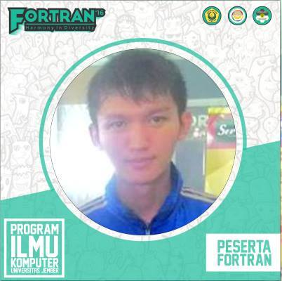
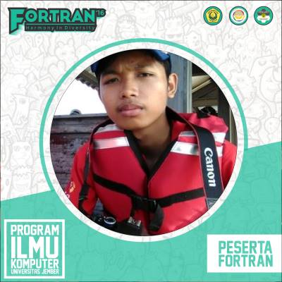
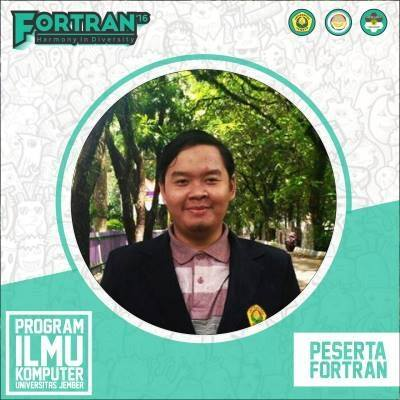

Website Magang @ KLY
Website ini merupakan website untuk lebih mengenal para magang yang berada di KapanLagi Youniverse (KLY).
# Tentang KapanLagi Youniverse
KapanLagi Youniverse (KLY) adalah perusahaan media online hasil merger PT Kreatif Media Karya (KMK) dan PT KapanLagi Networks (KLN).
KLY merupakan jaringan media terbesar di Indonesia yang menghadirkan solusi tak terbatas dan multi platforms. KLY untuk Indonesia, juga bertujuan untuk menjalin & menjaga hubungan dengan internet users, membangun sentimen positif, menangkal berita hoax, menjaga kredibilitas informasi melalui saluran pemberitaan independen.
Didukung oleh hampir 1.000 personel termasuk para professional di bidang jurnalisme dan kreasi konten, KLY membangun ekosistem konten yang aman untuk advertiser, yang mengutamakan brand safety
Misi
Menjadi perusahaan media online nomor 1 di Indonesia yang menyajikan solusi 360 melalui konsep digital dengan pendekatan yang terintegrasi dan komprehensif.
Visi
Meningkatkan kualitas hidup masyarakat melalui teknologi, inovasi, dan layanan online di era digital serta bertujuan menjadikan masyarakat yang lebih pintar.
# Fahmi Chairuddin

| Nama | : | Fahmi Chairuddin |
|---|---|---|
| TTL | : | Situbondo, 6 Oktober 1998 |
| Kampus | : | Universitan Jember |
| Fakultas | : | Ilmu Komputer |
| Program Studi | : | Sistem Informasi |
| Motto | : | "Perbedaan bukan memecahkan, namun dari perbedaan bisa muncul sebuah kebersamaan, keakraban, dan keharmonisan. Dan itu akan kami wujudkan dalam FORTRAN 2016." |
# Ahmad Firdaus Ababil

| Nama | : | Ahmad Firdaus Ababil |
|---|---|---|
| TTL | : | Jember, 16 Februari 1998 |
| Kampus | : | Universitan Jember |
| Fakultas | : | Ilmu Komputer |
| Program Studi | : | Sistem Informasi |
| Motto | : | "Perbedaan bukan memecahkan, namun dari perbedaan bisa muncul sebuah kebersamaan, keakraban, dan keharmonisan. Dan itu akan kami wujudkan dalam FORTRAN 2016." |
# Habibullah Dzaky Musthafa

| Nama | : | Habibullah Dzaky Musthafa |
|---|---|---|
| TTL | : | - |
| Kampus | : | Universitan Jember |
| Fakultas | : | Ilmu Komputer |
| Program Studi | : | Sistem Informasi |
| Motto | : | "Perbedaan bukan memecahkan, namun dari perbedaan bisa muncul sebuah kebersamaan, keakraban, dan keharmonisan. Dan itu akan kamu wujudkan dalam FORTRAN 2016." |